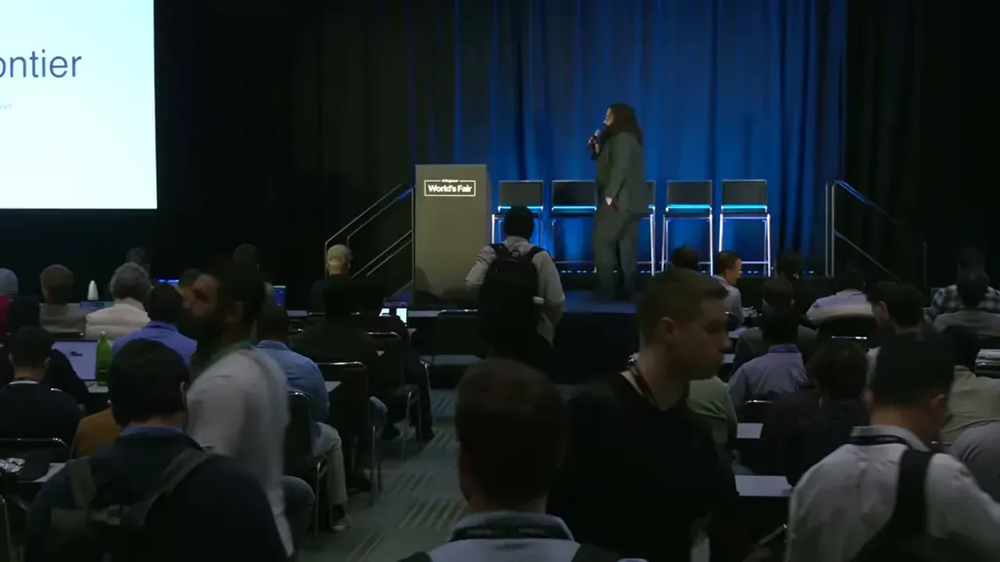
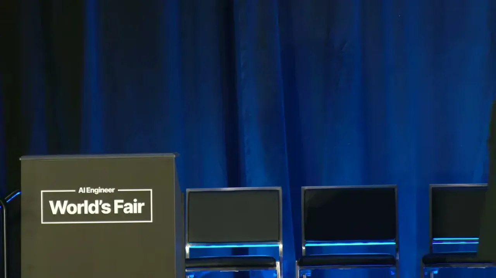

The speaker predicts that within roughly 18 months (around late 2027), GLM-5.2-class intelligence will run on a single RTX 5090 with 32GB of VRAM, and calls this a conservative estimate that could arrive faster. The argument is not that model sizes will stop growing at the frontier, but that the capability gap between frontier and locally-runnable open models will keep shrinking.
“within roughly 18 months we are going to have the equivalent of GLM 5.2 class intelligence running on a single RTX 5090 with 32 GB of VRAM”
▶ watch at 00:35
The speaker frames the trend as newer, more efficient models beating older, less efficient ones rather than small models inherently beating big ones, citing research on architecture efficiency gains that compound over time. He cites a pattern he calls the densing law: roughly every 3.5 months, models deliver the same capability with fewer parameters (transcript renders the word as 'fear', likely an ASR mishearing of 'fewer').
“It's not that small models are beating big models. It's that newer, more efficient models are beating older, less efficient ones.”
▶ watch at 04:48“every three and a half months we are having 50% fear parameters whether that's in dense or activated”
▶ watch at 04:48
GLM 5.2 is presented as the current best local/open model, with 744 billion total parameters but only 40 billion activated, supporting up to a 1 million token context, runnable on a DGX station or a server with eight RTX Pro 6000 GPUs. On one benchmark it beats GPT-5.5 Extra High.
“it's 744 billion parameters total with only 40 billion parameter activated. And that supports up to 1 million contexts.”
▶ watch at 05:19“it's on one benchmark it actually beats GBT 5.5 extra high”
▶ watch at 05:50The speaker argues that as capability density improves, hardware bought today becomes more valuable over time because it will run increasingly capable models, and makes the case for individuals and businesses to own their own hardware and models ('sovereign AI') rather than depend on subsidized cloud subscriptions. He predicts GPT-4o-level quality will run directly on an iPhone, illustrating how far capability has moved onto small, owned hardware footprints.
“you can run you can now run GBT40 quality on your iPhone”
▶ watch at 06:55“Why wouldn't you want to make sure that nothing gets taken away from you? That every little thing can be optimized for you later on, that the performance gains can be made specially and specifically for your use cases”
▶ watch at 07:25“is the amber uh architecture from 2020 sells at higher value than MSRP today and it's still being utilized for a lot of use cases”
▶ watch at 16:46(ours) The 18-month prediction rests on extrapolating a recent trend (the speaker cites a similar prediction from earlier in the year that reportedly came true by March), which is suggestive but is a single data point rather than a validated forecasting track record.
| Stance | Claim | t |
|---|---|---|
| predicts | Within roughly 18 months, GLM 5.2-class intelligence will run on a single RTX 5090 with 32GB of VRAM. | 00:35 |
| asserts | The trend is newer, more efficient models beating older, less efficient ones, not small models inherently beating big ones. | 04:48 |
| asserts | Roughly every 3.5 months, models deliver comparable capability with about half the parameters. | 04:48 |
| asserts | GLM 5.2 has 744 billion total parameters with only 40 billion activated, and supports up to 1 million tokens of context. | 05:19 |
| asserts | GLM 5.2 beats GPT-5.5 Extra High on one benchmark. | 05:50 |
| predicts | GPT-4o-level model quality can now run directly on an iPhone. | 06:55 |
| recommends | Individuals and businesses should own their own hardware and models rather than depend on subsidized cloud AI subscriptions. | 07:25 |
| asserts | Older RTX 3090 GPUs from 2020 currently sell above their original MSRP and remain in active use. | 16:46 |
Machine-readable copy embedded in this page (script#ontology) and in the corpus ontology.